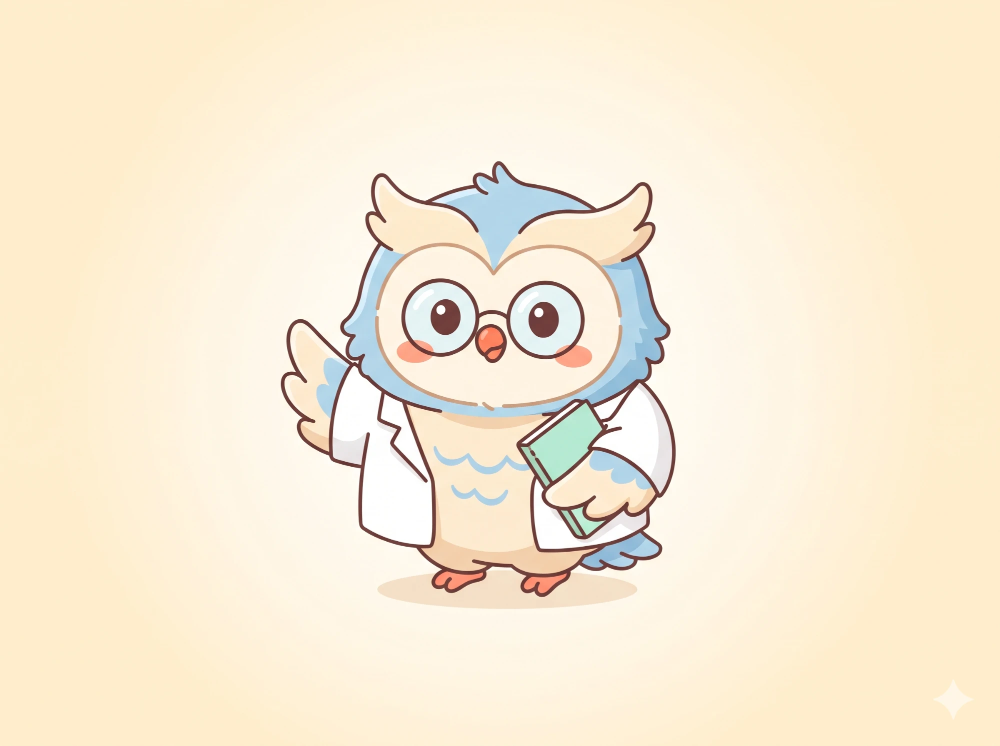

안녕, 난 "꿈돌이"야!
미스터리 사건 카드를 뽑으면 어떤 직업 이야기인지 맞혀야 해. 정답을 확인하면 그 상황에 필요한 과학 지식과 과학적 탐구 과정을 둘 다 알려줄게. 25개 직업을 모두 맞혀서 나만의 직업도감을 완성해 보자! 모둠 친구들과 함께 뽑으면서 도감을 채워도 좋아.
📖 직업도감
0 / 25
위 버튼을 눌러서 사건 카드를 뽑아 봐. 어떤 직업 이야기인지 맞히면 도감이 채워져! 이미 채운 직업 칸을 누르면 도감 카드를 다시 볼 수 있어.
🕵️
미스터리 사건
🧪 이 상황에 필요한 과학 지식
🔬 이 상황에 필요한 과학적 탐구 과정
🏆 25개 직업을 모두 모았어요!
식당의 요리사부터 박물관 큐레이터까지, 어떤 직업이든 과학 지식과 과학적 탐구 과정이 둘 다 숨어 있었죠? 과학은 과학자만의 것이 아니라, 우리 주변 거의 모든 직업과 관련이 있답니다.
직업
🧪 관련된 과학 지식
🔬 관련된 과학적 탐구 과정